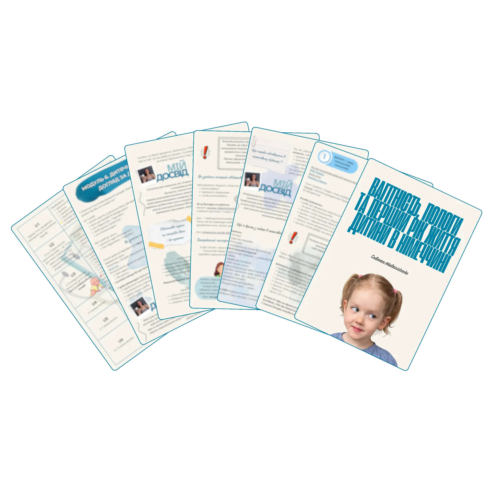

Повний ПОКРОКОВИЙ ПЛАН для мами в Німеччині: що, коли і куди подавати
Знижка 63%19€
7€
-
Гайд на 30 сторінок чіткої структури
-
Як проходить вагітність у Німеччині без стресу
-
Усі виплати під час вагітності та після пологів
-
Покрокове оформлення документів для малюка
Усі документи, виплати та терміни зібрані в одному ГАЙДІ – щоб ти нічого не шукала і була спокійна
Що ти отримаєш?
-
Повний структурований гайд на 30 сторінок — без хаосу та пошуків по різних сайтах
-
Конкретні виплати та фінансова допомога: Jobcenter, Фонд матері та дитини, Elterngeld, Kindergeld, виплати з України — з поясненнями, кому і як оформити
-
Покрокове оформлення документів для малюка: страховка, свідоцтво про народження, довідка про громадянство України, закордонний паспорт, правильні переклади
-
Реальне розуміння, як проходить вагітність у Німеччині: пологи, пологові будинки, Hebamme та вся система підтримки
-
Гарантія повернення коштів протягом 3 днів — без пояснення причини, якщо гайд не виправдає очікувань
Відгуки тих, хто вже придбав гайд:
Цей гайд для тебе, якщо:
- 🤰 ти вагітна або тільки плануєш вагітність у Німеччині і боїшся щось пропустити
- 📑 ти губишся в документах і не розумієш, які виплати тобі належать
- ⏳ не хочеш витрачати години на пошук інформації німецькою
- ⚠️ боїшся зробити помилку, яка коштуватиме часу або грошей
- 🕊 хочеш пройти цей період спокійно — з чітким планом дій
Тобі не треба розбиратися самій — все вже зібрано в ОДНОМУ МІСЦІ

Спеціальна стартова ціна діє:
Для німецьких карток та міжнародних платежів —обирайте PayPal 🇩🇪
Що всередині гайду?
Тут ти знайдеш усе, що потрібно знати про вагітність, пологи та перший рік дитини в Німеччині.
-
Вагітність у Німеччині
Як працює система ведення вагітності: гінеколог, страхування, аналізи, обстеження, вибір лікаря та клініки, курси підготовки до пологів.
-
Пологи
Де і як проходять пологи, які є варіанти (партнерські, у воді, з епідуральною анестезією), як обрати клініку, коли їхати в пологовий і що брати з собою.
-
Оформлення документів
Покроковий алгоритм оформлення всіх документів у Німеччині та Україні: свідоцтво про народження, прописка, ВНЖ, виплати, український закордонний паспорт.
-
Фінансові виплати
Всі доступні виплати та програми підтримки: Kindergeld, Elterngeld, допомога від Jobcenter, федеральні фонди, разові виплати та компенсації.
-
Перший рік життя дитини
Медичні огляди U, вакцинація, педіатр, страхування дитини, особливості медичної системи в Німеччині.
-
Дитячий садок або догляд за дитиною
Пошук садка, черги, типи догляду (Kita, Tagesmutter) та практичні поради з досвіду.
Залишились питання?
-
Як я отримаю гайд після оплати?
Після успішної оплати Вас автоматично переведе на сторінку чат-боту в Telegram, де Ви і отримаєте гайд.
-
На скільки часу я отримаю доступ до гайду?
Доступ залишається у вас назавжди — Ви можете повертатися до матеріалів у будь‑який момент.
-
Що робити, якщо виникла проблема з оплатою або я не отримала гайд ?
Напишіть мені в особисті повідомлення в Telegram: @MaiaKoll — я допоможу вирішити Ваше питання.
-
Чи підійде цей гайд, якщо я вже народила або тільки планую вагітність ?
Так! У гайді є великий розділ про оформлення документів одразу після народження, виплати та лікарів. Або цей гайд допоможе Вам підготуватися заздалегідь і уникнути хаосу.
-
Як сплатити, якщо в мене тільки німецька картка ?
На другій сторінці сайту ви знайдете кнопку "Купити через PayPal". Якщо виникнуть проблеми або труднощі - звертайтесь в особисті повідомлення в Телеграм - @MaiaKoll